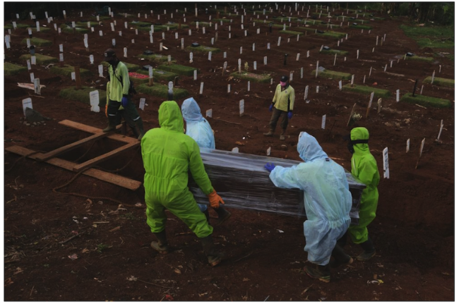

Indonesia đang trong"kịch bản tồi tệ nhất", nguy cơ thành Ấn Độ thứ 2
(dân chí) Indonesia thừa nhận đang ở trong tình trhạng khẩn cấp khi số ca nhiễm và tử vong do vì Covid-19 dobieens thể delta
Gần 1000 người chết tại Indonesia
Lý do khiên Indonesia trở tahnhf ổ dịch lớn nhất ĐNA
Bi kịch bệnh nhân Covid-19 lìa đời tại nhà vì thếu õxi
|
Thủ tướng triệu tập họp với 27 tỉnh, thành đang "nóng" dịch Covid-19
Nghị quyết 68/NQ-CP: ngoài khoản hỗ trợ còn là sự động viên, chia sẻ.
Hàng trăm người chờ mua hàng hóa ở TP HCM rất "căng thẳng" vì có tin đồn
9 nhân sự Trung ương giới thiệu không trúng cử Đại biểu Quốc hội
TPHCM phân công lại nhiệm vụ của phó chủ tịch Nguyễn Bảo Ngọc
Mỹ lo sốt vó khi "quái vật" Covid-19 bùng phát trở lại
Lộ trình lựa chọn, thí điêm sát nhập tỉnh như thế nào
Hà Nôi: ghi nhận 7 ca liên tiếp dương tính với SART CÔ VI 2
Hà nội tiến hành bắt sống quái vật tại ptit
học sinh udu ript mãi đỉnh
AI AIO mãi đỉnh
|


|